The preceding modeling chapters considered methods that learn from a target variable. Suppose now we have a dataset that contains observations \(x_1, x_2, \dots, x_N\in \mathbb R^{D}\), but no response variable has been specified. The analyst does not initially know which directions in the feature space matter, which variables carry redundant information, whether the observations lie near a lower-dimensional structure, or whether the measurements are dominated by noise.
PCA seeks directions along which the observations vary most. It replaces the original variables with new variables called principal component scores. These components are mutually orthogonal linear combinations of the original features and are ordered according to the amount of sample variance they explain.
At a geometric level, PCA approximates a cloud of observations by a lower-dimensional affine subspace. At an algebraic level, it computes eigenvectors of the covariance matrix or right singular vectors of the centered data matrix. At an optimization level, it solves two equivalent problems:
maximize the variance retained after projection;
minimize the squared reconstruction error after dimension reduction.
PCA is generally described as a non-parametric, unsupervised method. It does not use class labels or a response during fitting, and classical PCA does not specify a complete probability model. Its apparent simplicity, however, should not conceal its assumptions. PCA is linear, variance-oriented, sensitive to scale and outliers, and dependent on the geometry induced by the chosen variables.
The central principle of PCA is:
Replace a high-dimensional coordinate system with an orthogonal coordinate system aligned with the dominant directions of variation.
This transformation can support visualization, compression, denoising, exploratory analysis, feature construction, covariance regularization, and downstream modeling. It does not automatically discover the most scientifically important directions, nor does high variance necessarily imply high predictive or causal relevance.
Hence, an uncentered decomposition may identify the direction from the origin to the mean rather than directions of variation around the mean.
1.1. Covariance PCA Versus Correlation PCA
Centering does not resolve differences in measurement scale.
Suppose a health dataset contains:
annual income measured in dollars;
age measured in years;
body temperature measured in degrees Celsius;
a biomarker measured in milligrams per liter.
A variable with large numerical variance may dominate the covariance matrix even if it is not substantively more important.
Standardization transforms each variable to
\[
z_{nj} = \frac{x_{nj}-\bar{x}_j}{s_j},
\]
where \(s_j\) is its sample standard deviation.
PCA applied to standardized variables is equivalent to eigendecomposition of the correlation matrix
\[
R = D_s^{-1}SD_s^{-1},
\]
where \(D_s = \operatorname{diag}(s_1,\ldots,s_D).\)
Covariance-based PCA is suitable when:
variables share meaningful units;
absolute variance is scientifically relevant;
larger physical variability should receive greater weight.
Correlation-based PCA is suitable when:
units differ;
variable scales are arbitrary;
relative standardized variation is the intended geometry.
Standardization is not automatically correct. It changes the problem. Covariance PCA asks which physical directions have greatest total variation. Correlation PCA asks which standardized combinations explain the greatest relative variation.
1.2. Messy Data Before PCA
PCA requires a numerical matrix, but real data rarely arrive as a clean, complete, homogeneous array.
Important problems include:
1.2.1 Missing Values
Ordinary PCA cannot directly eigendecompose a matrix containing undefined values. Common responses include:
complete-case removal;
simple mean or median imputation;
multivariate imputation;
iterative low-rank reconstruction;
probabilistic PCA with missing-data inference.
Mean imputation preserves the column mean but reduces apparent variance and can distort covariance. If missingness is systematic, the estimated principal directions may describe the imputation mechanism rather than the underlying phenomenon.
1.2.2 Categorical Variables
Naively applying PCA to integer category codes creates artificial geometry. Coding regions as
implies distances and ordering that may not exist.
One-hot encoding is possible, but ordinary Euclidean PCA may still be inappropriate for highly categorical data. Multiple correspondence analysis or methods using suitable mixed-data metrics may be preferable.
1.2.3 Outliers
PCA is based on squared distances and sample covariance. A small number of extreme observations can rotate the principal axes dramatically.
If one observation lies far from the center, its covariance contribution is
\[
(x_n-\bar{x})(x_n-\bar{x})^\top,
\]
which grows quadratically with distance.
Outliers must not be deleted automatically; they may be scientifically important. The analyst should distinguish:
This proves the equivalence of the two PCA formulations.
3.4. Reconstruction Error Theorem
NoteOptimal Rank-\(M\) PCA Reconstruction
Let\(\lambda_1\geq\lambda_2\geq\cdots\geq\lambda_D\) be the covariance eigenvalues. Among all \(M\)-dimensional linear subspaces, the subspace spanned by \(u_1,\ldots,u_M\) minimizes average squared orthogonal reconstruction error. The minimum error is
\[
J_M^* = \sum_{j=M+1}^{D}\lambda_j.
\]
TipProof
Represent the centered observation in the complete eigenbasis:
The variance of component \(j\) is \(\lambda_j\), so
\[
J_M = \sum_{j=M+1}^{D}\lambda_j.
\]
Retaining the largest eigenvalues minimizes the discarded sum. This result is also a consequence of the Eckart–Young–Mirsky theorem for optimal low-rank matrix approximation.
4. Singular Value Decomposition
4.1. SVD of the Centered Data Matrix
Instead of explicitly forming \(S\), compute the singular value decomposition
\[
X_c=U\Sigma V^\top.
\]
To avoid conflicting notation with PCA loading vectors, interpret:
\(U\in\mathbb{R}^{N\times r}\): left singular vectors;
\(V\in\mathbb{R}^{D\times r}\): right singular vectors;
The PCA directions are the columns of \(V\), and the covariance eigenvalues are
\[
\lambda_j=\frac{\sigma_j^2}{N}.
\] Using the \(1/(N-1)\) covariance convention gives
\[
\lambda_j=\frac{\sigma_j^2}{N-1}.
\]
The score matrix is
\[
Z=X_cV=U\Sigma.
\]
TipWhy SVD is usually preferred?
Computing PCA by SVD is usually more stable than explicitly constructing and diagonalizing \(X_c^\top X_c\).
Forming the covariance matrix squares the condition number:
\[
\kappa(X_c^\top X_c) = \kappa(X_c)^2.
\] This can amplify numerical instability when the data matrix contains nearly dependent columns.
SVD also naturally supports:
rank-deficient data;
\(D\gg N\) settings;
truncated algorithms;
randomized approximations;
direct low-rank reconstruction.
4.2. Dual PCA for \(D\gg N\)
When the number of variables is much larger than the number of observations, the covariance matrix \(X_c^\top X_c\) has dimension \(D\times D\), which may be expensive to store or diagonalize.
Instead, solve the eigenproblem for
\[
G = \frac{1}{N}X_cX_c^\top \in\mathbb{R}^{N\times N}.
\]
A common rule selects the smallest \(M\) satisfying
\[
CEV(M)\geq\tau,
\]
where \(\tau\) may be 0.90, 0.95, or 0.99.
This rule is convenient but not universal. A component with low global variance may contain important rare-group structure. Conversely, high variance may reflect nuisance effects, measurement scale, batch effects, or noise.
Other selection tools include:
scree plots;
reconstruction validation;
parallel analysis;
downstream task performance;
domain constraints;
probabilistic model evidence.
5.2. Scree Plot
A scree plot displays \(\lambda_j\) against component index \(j\). A visible elbow may indicate a transition from dominant structured components to smaller residual components.
The elbow is often subjective. When eigenvalues decay gradually, no natural low-dimensional boundary may exist.
6. Loadings, Scores, and Interpretation
6.1. Scores and Loadings
PCA produces two distinct objects.
Scores
The score of observation n on component j is
\[
z_{nj} = u_j^\top(x_n-\bar{x}).
\]
Scores describe observations in the component coordinate system.
Loadings
The entries of \(u_j\) describe how original variables contribute to principal direction j.
a large magnitude \(|u_{kj}|\) means variable k strongly contributes to the component direction.
The sign of an eigenvector is arbitrary. Both \(u_j\) and \(-u_j\) describe the same principal axis. Therefore, component signs may differ across software without changing the fitted subspace.
6.2. Loading Interpretation Requires Care
A principal component is not automatically a real latent construct. An analyst may label a component “economic development,” “health severity,” or “morphological size,” but such names are interpretations of a weighted combination.
Interpretation should consider:
loading magnitude;
loading sign relative to other variables;
variable units and scaling;
score patterns across observations;
stability under resampling;
known measurement structure.
When eigenvalues are similar, individual eigenvectors may be unstable even if the span of their combined subspace is stable.
6.3. Biplots
A PCA biplot places observations and variable directions in the same two-dimensional display.
Observations are represented by score coordinates such as \((z_{n1},z_{n2}).\) Variables are represented through loading-related vectors.
Approximate interpretation:
nearby points have similar projected profiles;
long variable arrows indicate strong representation in the displayed plane;
arrows in similar directions indicate positive relationships;
A biplot is a projection. Apparent distances and angles can be misleading when the first two components explain only a modest share of total variance.
7. Wine Chemistry
The Wine dataset contains chemical measurements for wines from three cultivars. PCA can reveal dominant chemical variation without using cultivar labels during fitting. Labels may be added afterward only to interpret the resulting unsupervised representation.
The variables have different scales, so standardization is appropriate when the aim is to prevent high-variance measurements from dominating solely because of units.
Standardization changes the geometry by equalizing marginal feature scales.
Labels may be overlaid after fitting to investigate whether unsupervised structure aligns with known groups.
Components must be interpreted through both scores and loadings.
8. Handwritten Digit Compression
8.1. Images as High-Dimensional Vectors
An \(8\times8\) grayscale image can be flattened into \(x\in\mathbb{R}^{64}\).
Each coordinate is a pixel intensity. PCA treats each image as a point in a 64-dimensional space.
The mean image is
\[
\bar{x} = \frac{1}{N}\sum_{n=1}^{N}x_n.
\]
Principal directions can be reshaped into \(8\times8\) images. These component images represent dominant modes of variation across the dataset.
A rank-M reconstruction is
\[
\hat{x} = \bar{x} + \sum_{j=1}^{M}z_j u_j.
\]
As \(M\) increases, more image detail is recovered.
8.2. Digit Reconstruction and Eigenimages
Show code
import numpy as npimport matplotlib.pyplot as pltfrom sklearn.datasets import load_digitsfrom sklearn.decomposition import PCAfrom sklearn.preprocessing import StandardScalerdigits = load_digits()X = digits.datay = digits.targetimages = digits.imagesplt.figure(figsize=(10, 4))for i inrange(10): plt.subplot(2, 5, i +1) plt.imshow(images[i], cmap="gray") plt.title(f"Label: {y[i]}") plt.axis("off")plt.suptitle("Real Handwritten Digit Observations")plt.tight_layout()plt.show()# Pixel intensities share the same physical scale, so center without# unit-variance standardization for image reconstruction.pca_full = PCA()scores = pca_full.fit_transform(X)plt.figure(figsize=(4, 4))plt.imshow(pca_full.mean_.reshape(8, 8), cmap="gray")plt.title("Mean Digit Image")plt.axis("off")plt.tight_layout()plt.show()plt.figure(figsize=(10, 5))for i inrange(10): plt.subplot(2, 5, i +1) component = pca_full.components_[i].reshape(8, 8) bound = np.abs(component).max() plt.imshow( component, cmap="coolwarm", vmin=-bound, vmax=bound ) plt.title(f"PC {i +1}") plt.axis("off")plt.suptitle("Leading PCA Directions Reshaped as Images")plt.tight_layout()plt.show()cumulative = np.cumsum(pca_full.explained_variance_ratio_)plt.figure(figsize=(8, 5))plt.plot( np.arange(1, len(cumulative) +1), cumulative, marker="o", markersize=3)plt.axhline(0.90, linestyle="--", label="90%")plt.axhline(0.95, linestyle=":", label="95%")plt.title("Digits PCA: Cumulative Explained Variance")plt.xlabel("Number of retained components")plt.ylabel("Cumulative explained variance")plt.legend()plt.tight_layout()plt.show()query_index =13original = X[query_index]component_counts = [1, 3, 5, 10, 20, 40, 64]plt.figure(figsize=(14, 4))plt.subplot(2, 4, 1)plt.imshow(original.reshape(8, 8), cmap="gray")plt.title(f"Original: {y[query_index]}")plt.axis("off")for panel, m inenumerate(component_counts, start=2): pca_m = PCA(n_components=m) compressed = pca_m.fit_transform(X) reconstructed = pca_m.inverse_transform(compressed)[query_index] plt.subplot(2, 4, panel) plt.imshow(reconstructed.reshape(8, 8), cmap="gray") plt.title(f"{m} components") plt.axis("off")plt.suptitle("Lossy PCA Reconstruction of a Real Digit")plt.tight_layout()plt.show()plt.figure(figsize=(9, 7))for digit inrange(10): mask = y == digit plt.scatter( scores[mask, 0], scores[mask, 1], s=18, alpha=0.55, label=str(digit) )plt.title("Digits Projected onto the First Two Principal Components")plt.xlabel(f"PC1 ({pca_full.explained_variance_ratio_[0]:.1%} variance)")plt.ylabel(f"PC2 ({pca_full.explained_variance_ratio_[1]:.1%} variance)")plt.legend(ncol=2)plt.tight_layout()plt.show()
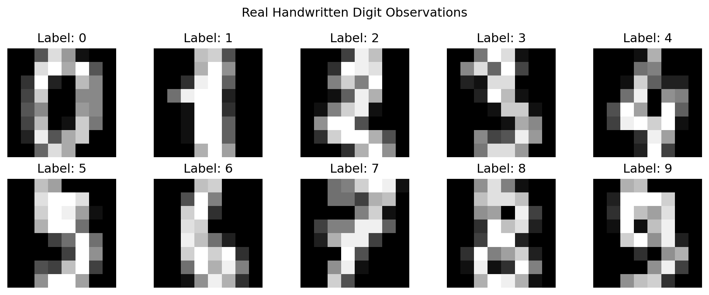
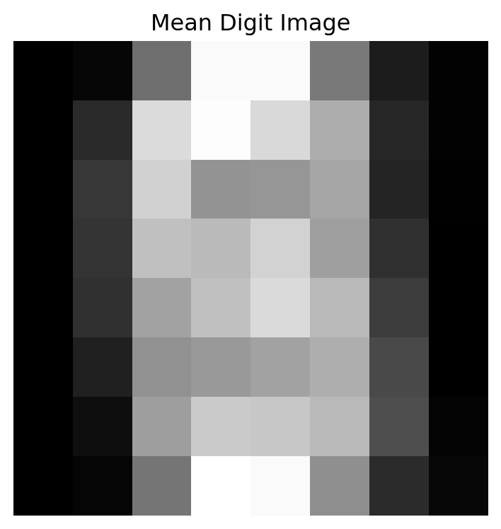
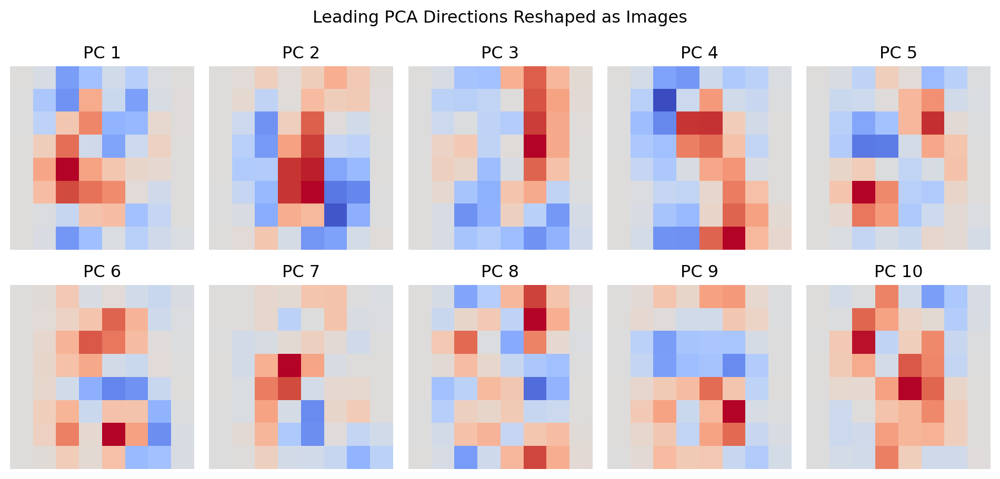
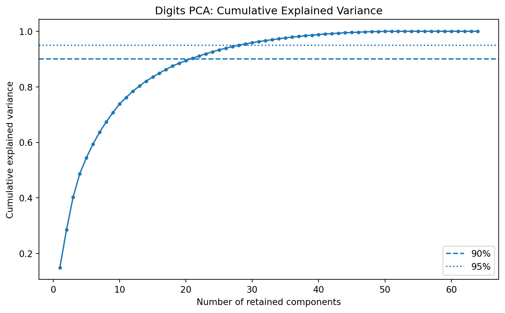
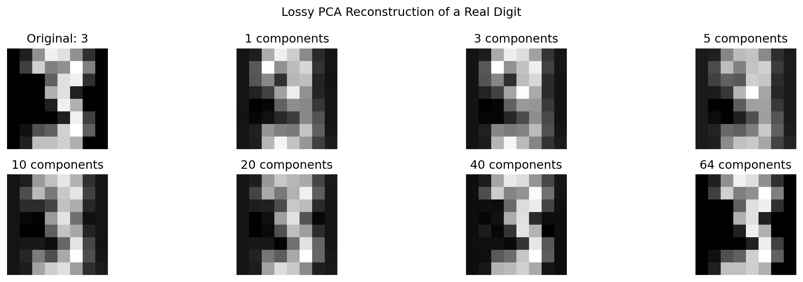
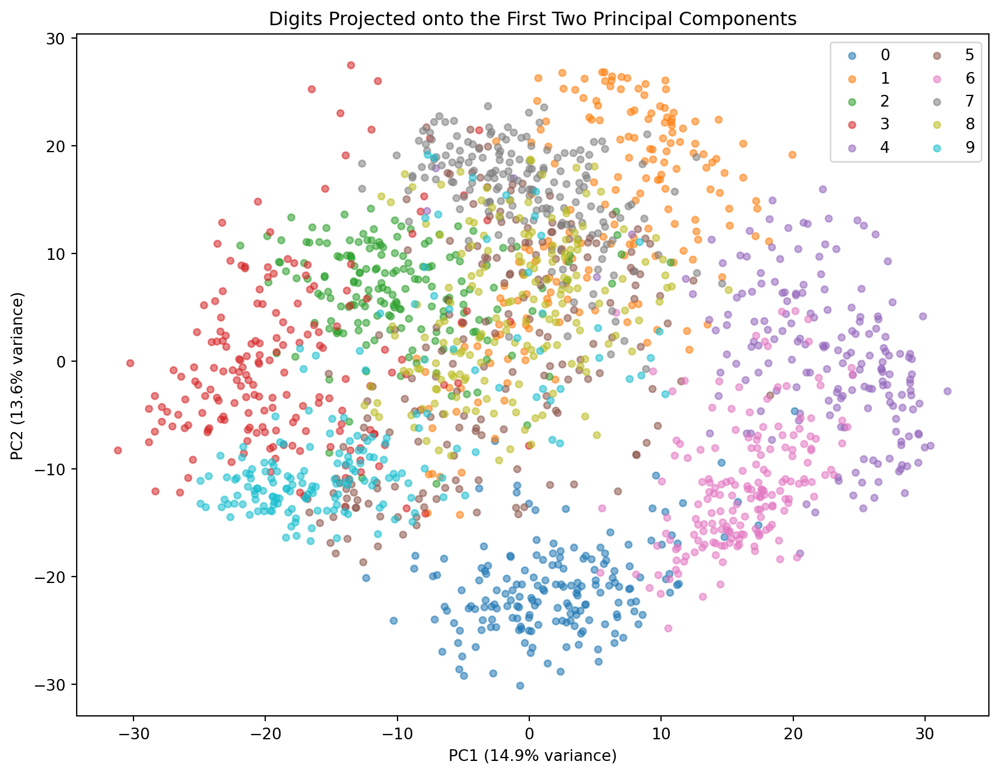
9. Eigenfaces
A grayscale face image of height H and width W is represented as \(x\in\mathbb{R}^{HW}\).
Given aligned face images, PCA estimates:
the mean face;
principal modes of facial variation;
low-dimensional face coordinates;
approximate reconstructions.
The principal directions reshaped as images are called eigenfaces. Turk and Pentland’s classical recognition framework represented faces through coefficients in an eigenface basis.
PCA-based face recognition works best when images are aligned and collected under controlled conditions. Illumination, head pose, background, occlusion, and expression may dominate identity-related variation.
Show code
import numpy as npimport matplotlib.pyplot as pltfrom sklearn.datasets import fetch_olivetti_facesfrom sklearn.decomposition import PCAfaces = fetch_olivetti_faces(shuffle=True, random_state=42)X = faces.dataimages = faces.imagesperson_id = faces.targetheight, width = images.shape[1:]pca = PCA(n_components=100, whiten=False, random_state=42)scores = pca.fit_transform(X)plt.figure(figsize=(10, 5))for i inrange(15): plt.subplot(3, 5, i +1) plt.imshow(images[i], cmap="gray") plt.title(f"Person {person_id[i]}") plt.axis("off")plt.suptitle("Olivetti Face Dataset: Real Observations")plt.tight_layout()plt.show()plt.figure(figsize=(4, 4))plt.imshow(pca.mean_.reshape(height, width), cmap="gray")plt.title("Mean Face")plt.axis("off")plt.tight_layout()plt.show()plt.figure(figsize=(12, 6))for i inrange(20): plt.subplot(4, 5, i +1) component = pca.components_[i].reshape(height, width) bound = np.abs(component).max() plt.imshow( component, cmap="coolwarm", vmin=-bound, vmax=bound ) plt.title(f"PC {i +1}") plt.axis("off")plt.suptitle("Leading Eigenfaces")plt.tight_layout()plt.show()query_index =0component_counts = [5, 10, 25, 50, 100]plt.figure(figsize=(12, 4))plt.subplot(1, 6, 1)plt.imshow(images[query_index], cmap="gray")plt.title("Original")plt.axis("off")for panel, m inenumerate(component_counts, start=2): pca_m = PCA(n_components=m, random_state=42) z = pca_m.fit_transform(X) reconstructed = pca_m.inverse_transform(z)[query_index] plt.subplot(1, 6, panel) plt.imshow(reconstructed.reshape(height, width), cmap="gray") plt.title(f"M={m}") plt.axis("off")plt.suptitle("Face Reconstruction from an Eigenface Basis")plt.tight_layout()plt.show()
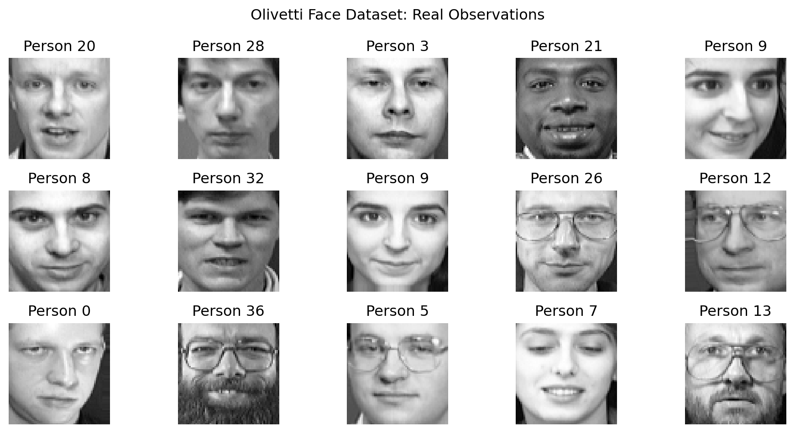
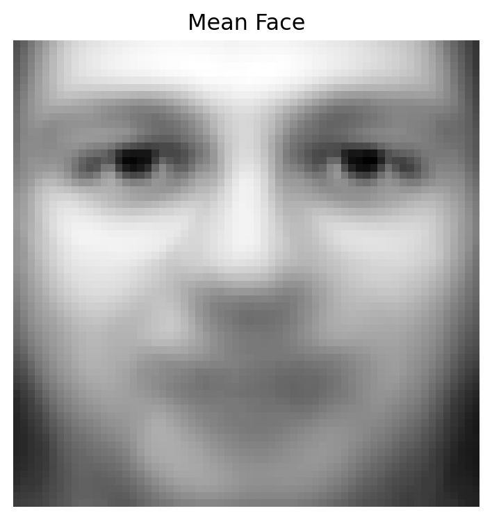
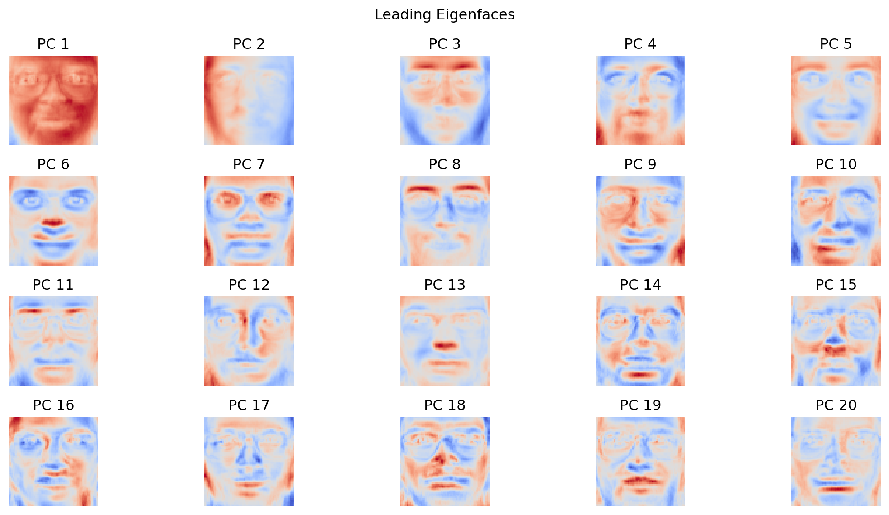
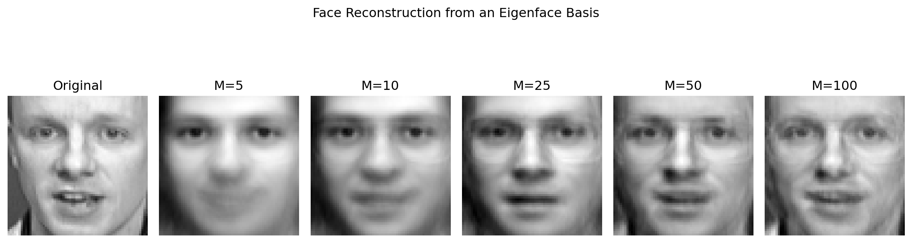
10. Whitening and Sphering
10.1. PCA Whitening
Let the centered PCA coordinates be
\[
z=U^\top(x-\bar{x}).
\]
Their covariance is
\[
\operatorname{Cov}(z)=\Lambda.
\] Whitening rescales each component by the inverse square root of its eigenvalue:
where \(\varepsilon>0\) prevents extreme amplification.
Whitening is useful when downstream methods assume spherical covariance, but it destroys the original variance hierarchy. It should not be treated as an automatically beneficial transformation.
Classical PCA gives a geometric decomposition but not a complete generative probability model. Probabilistic PCA, or PPCA, introduces latent variables.
Let \(z\in\mathbb{R}^M\) be a latent vector with \(z\sim\mathcal{N}(0,I_M)\).
The observed variable is generated by
\[
x=Wz+\mu+\epsilon,
\] where \(W\in\mathbb{R}^{D\times M}\), \(\epsilon\sim\mathcal{N}(0,\sigma^2I_D)\).
Conditional on \(z\),
\[
x\mid z \sim \mathcal{N}(Wz+\mu,\sigma^2I).
\] Marginalizing over \(z\),
\[
x \sim \mathcal{N}(\mu,C),
\] where \(C=WW^\top+\sigma^2I\).
TipDerivation
Because \(x-\mu=Wz+\epsilon\), and \(z\) and \(\epsilon\) are independent,
At maximum likelihood, the column space of the PPCA loading matrix W is the classical principal subspace. Tipping and Bishop1 showed that the maximum-likelihood form is
Unlike classical PCA scores, PPCA latent coordinates are uncertain random variables.
12. Kernel PCA
Classical PCA finds a linear subspace. If observations lie near a curved manifold, a linear projection may require many dimensions or may collapse distinct parts of the structure.
Kernel PCA first maps data through \(\phi:\mathcal{X}\rightarrow\mathcal{H},\) where \(\mathcal{H}\) may be high- or infinite-dimensional, and then performs linear PCA in \(\mathcal{H}\).
Even if the original \(X\) is centered, \(\phi(X)\) need not be centered in feature space.
Let \[
H = I_N-\frac{1}{N}\mathbf{1}\mathbf{1}^\top.
\]
The centered Gram matrix is \(K_c=HKH\). Expanded,
\[
K_c = K - \frac{1}{N}\mathbf{1}\mathbf{1}^\top K - \frac{1}{N}K\mathbf{1}\mathbf{1}^\top + \frac{1}{N^2} \mathbf{1}\mathbf{1}^\top K \mathbf{1}\mathbf{1}^\top.
\]
Kernel PCA solves
\[
K_c\alpha_j=N\lambda_j\alpha_j.
\]
The component score of a training observation is obtained from kernel eigenvectors. For new observations, scores require centered kernel evaluations against the training data.
A classical loading vector usually has nonzero coefficients for most variables:
\[
u_j= (u_{1j},\ldots,u_{Dj})^\top.
\]
For datasets with thousands of variables, a component involving every variable may be difficult to interpret.
Sparse PCA seeks loading vectors with many exact zeros:
\[
\|u_j\|_0 = \#\{k:u_{kj}\neq0\} \ll D.
\]
A direct sparse-variance objective may be written as
$$ _u u^Su
|u|_2=1, |u|_0q. $$
The \(L_0\) constraint is combinatorial. Practical approaches use relaxations, regression formulations, \(L_1\) penalties, elastic-net penalties, or semidefinite approximations.
A schematic penalized objective is
$$ _u
|u|_2. $$
Zou, Hastie, and Tibshirani developed a regression-based sparse PCA using lasso and elastic-net regularization 2.
TipInterpretability-Variance Tradeoff
Sparse loadings are easier to interpret, but sparsity changes the optimization problem. Sparse PCA usually explains less variance than ordinary PCA for the same number of components.
Thus, sparse PCA balances: \[
\text{variance retention} \quad\text{against}\quad \text{loading simplicity}.
\] Sparse components may also lose exact orthogonality, depending on the formulation.
Number of nonzero ordinary PC1 loadings: 30
Number of nonzero sparse PC1 loadings: 23
14. PCA in Genetics and Population Structure
In population genetics, observations may be individuals and columns may be genetic variants. A genotype matrix might encode the number of minor alleles \(X_{ij}\in\{0,1,2\}\). PCA can reveal population structure because individuals with shared ancestry may have correlated allele-frequency patterns.
A simplified standardized genotype value is
\[
Z_{ij} = \frac{X_{ij}-2p_j} {\sqrt{2p_j(1-p_j)}},
\] where \(p_j\) is the estimated allele frequency for variant \(j\).
PCA of \(Z\) can expose continuous ancestry gradients, clusters, relatedness, and technical artifacts. Price et al. demonstrated how principal components can be used to detect and correct population stratification in genome-wide association studies3.
Caution
A genetic PCA plot does not reveal biologically fixed “types.” Components depend on sampled populations, preprocessing, variant filtering, relatedness, and the geometry of the selected data.
Large reconstruction error indicates that the observation is poorly represented by the learned principal subspace. This can be used for anomaly detection, particularly when normal observations lie near a low-dimensional structure.
However, an anomaly lying far along a retained high-variance component may have low reconstruction error. Complementary score-distance measures may be necessary.
This is related to Hotelling’s \(T^2\) statistic. Reconstruction error measures departure from the subspace; score distance measures extremeness within the subspace.
Show code
import numpy as npimport matplotlib.pyplot as pltfrom sklearn.decomposition import PCAfrom sklearn.preprocessing import StandardScalerrng = np.random.default_rng(42)# Normal observations near a 2D plane embedded in 5Dlatent = rng.normal(size=(500, 2))mixing = np.array([ [1.0, 0.2], [0.5, 1.0], [-0.8, 0.4], [0.2, -0.9], [0.7, 0.6]])normal = latent @ mixing.T + rng.normal(0, 0.08, size=(500, 5))# Anomalies departing from the normal subspaceanomalies = rng.normal(size=(15, 5)) *2.5X = np.vstack([normal, anomalies])true_kind = np.array(["normal"] *len(normal) + ["anomaly"] *len(anomalies))scaler = StandardScaler()normal_scaled = scaler.fit_transform(normal)X_scaled = scaler.transform(X)pca = PCA(n_components=2)pca.fit(normal_scaled)scores = pca.transform(X_scaled)reconstruction = pca.inverse_transform(scores)reconstruction_error = np.sum( (X_scaled - reconstruction) **2, axis=1)plt.figure(figsize=(8, 6))scatter = plt.scatter( scores[:, 0], scores[:, 1], c=reconstruction_error, s=35)plt.colorbar(scatter, label="Squared reconstruction error")plt.title("PCA Score Space with Reconstruction-Error Coloring")plt.xlabel("PC1")plt.ylabel("PC2")plt.tight_layout()plt.show()plt.figure(figsize=(8, 5))plt.hist( reconstruction_error[true_kind =="normal"], bins=35, alpha=0.7, label="Normal")plt.hist( reconstruction_error[true_kind =="anomaly"], bins=15, alpha=0.7, label="Anomaly")plt.title("PCA Reconstruction Error as an Anomaly Score")plt.xlabel("Squared reconstruction error")plt.ylabel("Count")plt.legend()plt.tight_layout()plt.show()
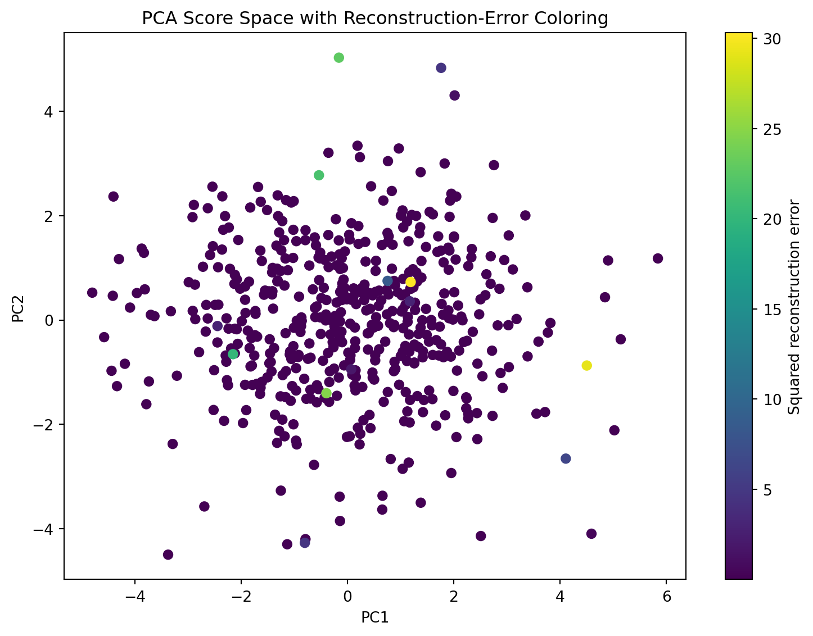
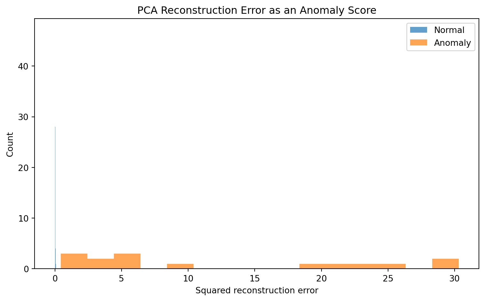
Principal Component Analysis is a method for discovering and representing dominant linear variation in unlabeled, multivariate data. It replaces the original variables with orthogonal directions chosen from the covariance structure.
The maximum-variance formulation begins with
\[
\max_{\|u\|=1}u^\top Su.
\]
Its solution is the leading covariance eigenvector. Subsequent components are obtained through orthogonality constraints and decreasing eigenvalues.
The reconstruction formulation seeks an \(M\)-dimensional subspace minimizing
\[
\frac{1}{N} \|X_c-X_cU_MU_M^\top\|_F^2.
\]
Its solution is the same leading eigenspace, and the minimum lost variance is
\[
\sum_{j=M+1}^{D}\lambda_j.
\]
This equivalence explains why PCA simultaneously performs variance preservation and optimal linear compression.
SVD provides the practical computational formulation:
\[
X_c=U\Sigma V^\top.
\]
The right singular vectors are principal directions, singular values determine explained variance, and truncated SVD gives the optimal low-rank representation.
PCA can reveal redundancy, latent gradients, groups, batch effects, image structure, population structure, and low-rank signal. It can compress images, generate eigenfaces, whiten features, denoise observations, and create anomaly scores. Probabilistic PCA adds a latent Gaussian model and uncertainty. Kernel PCA extends the method to nonlinear feature spaces. Sparse PCA sacrifices some variance to obtain simpler loading patterns.
The method’s limitations are equally fundamental. PCA is linear, scale-sensitive, outlier-sensitive, and unsupervised. It preserves high variance, not necessarily meaningful, predictive, causal, or rare variation. Its components depend on the variables, units, preprocessing decisions, observations, and sampling context.
PCA should therefore be understood not as a neutral compression command but as a model of data geometry. It proposes that the most useful low-dimensional representation is the orthogonal linear subspace capturing the greatest variance. Whether that proposal is scientifically appropriate must be evaluated through data provenance, scale, loading interpretation, stability, reconstruction behavior, and the purpose of the analysis.
Tipping, Michael E., and Christopher M. Bishop. Probabilistic Principal Component Analysis. n.d.↩︎
Zou, Hui, Trevor Hastie, and Robert Tibshirani. “Sparse Principal Component Analysis.” Journal of Computational and Graphical Statistics 15, no. 2 (2006): 265–86. https://doi.org/10.1198/106186006X113430.↩︎
Price, Alkes L., Nick J. Patterson, Robert M. Plenge, Michael E. Weinblatt, Nancy A. Shadick, and David Reich. “Principal Components Analysis Corrects for Stratification in Genome-Wide Association Studies.” Nature Genetics 38, no. 8 (2006): 904–9. https://doi.org/10.1038/ng1847.↩︎